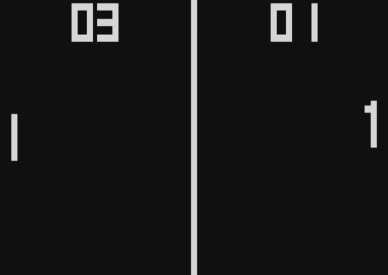
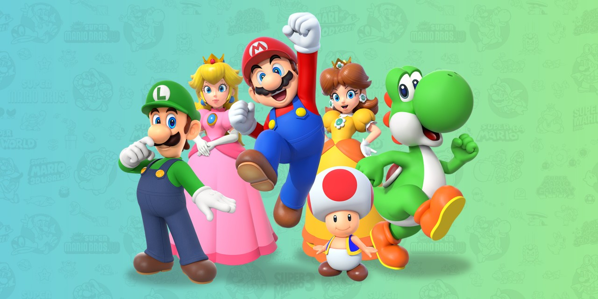

Fatos que talvez você não sabia
O mundo dos jogos eletrônicos é cheio de histórias interessantes e fatos que muita gente não conhece.

Muita gente acha que o primeiro jogo foi o Pong, mas na verdade foi um jogo chamado Tennis for Two, criado em 1958 por um físico americano chamado William Higinbotham. Ele fez o jogo num osciloscópio, que é um equipamento de laboratório. Bem diferente dos consoles de hoje.
O Minecraft é o jogo mais vendido da história, com mais de 300 milhões de cópias vendidas. E olha que ele foi criado por uma pessoa só, o sueco Markus Persson lá em 2009. Depois a Microsoft comprou o jogo por 2,5 bilhões de dólares.

O personagem mais famoso da Nintendo originalmente se chamava Jumpman. Ele ganhou o nome Mario por causa do dono do galpão que a Nintendo alugava nos Estados Unidos, que se chamava Mario Segale. A equipe achou que combinava e ficou assim.
Não é um filme, não é uma série. O Grand Theft Auto V já faturou mais de 8 bilhões de dólares desde o lançamento em 2013. Isso é mais que qualquer filme já lançado. Uma boa parte desse dinheiro vem do modo online, onde os jogadores compram itens dentro do jogo.
Acredite ou não, estudos já mostraram que jogar videogame pode melhorar a coordenação motora, o raciocínio rápido e até ajudar no tratamento de doenças como depressão e ansiedade. Claro que tudo com moderação, jogar 12 horas por dia não vai fazer bem pra ninguém.
Em 1983 a indústria de videogames quase acabou nos Estados Unidos. A Atari estava lançando jogos horríveis o famoso E.T. é considerado o pior jogo já feito e as pessoas pararam de comprar. A Nintendo salvou o mercado em 1985 com o lançamento do NES.
Quer conhecer mais curiosidades? Sugestões de alguns sites: